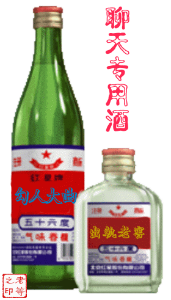

Conversation with 81184027 at Fri 23 May 2014 07:44:52 PM CST on 154115835 (webqq)
(07:51:29 PM) 福建-福州&水浒: :face81::face81::face81:
(07:53:21 PM) 上善若水: 听歌聊天，还有游戏
(07:57:31 PM) 福建-福州&水浒: 真忙
(07:58:31 PM) 福建-福州&水浒: 电脑被占，游戏无聊，墙内新闻不想看，咋整～
(07:59:08 PM) 阿萨汗蛋包飯: http://14.youku08.cf/3/
(07:59:12 PM) 福建-福州&水浒: 安卓系统手机看书用哪个软件好些？
(07:59:13 PM) 上善若水: 呵呵
(08:00:02 PM) 阿萨汗蛋包飯: 手机上网电池消耗快
(08:00:16 PM) 福建-福州&水浒: 看书去，什么软件好用些，能支持多种文件格式的
(08:00:15 PM) 光: 好像叫做静读天下
(08:00:19 PM) 光: 你找找
(08:00:49 PM) 福建-福州&水浒: 嗯
(08:02:11 PM) 福建-福州&水浒: 要得，找到了:grin:
(08:03:04 PM) 光: ：）
(08:09:22 PM) 光: 有时候想想犯罪分子确实很聪明
(08:09:53 PM) 光: 他们把普通人能想到的地方都做到了
(08:10:08 PM) 光: 真是勤奋的坏人
(08:10:56 PM) 福建-福州&水浒: :L
(08:10:43 PM) 光: 普通人就是懒惰的好人
(08:11:34 PM) 阿萨汗蛋包飯: 是的。正解
(08:11:12 PM) 光: 嗯
(08:11:39 PM) 河北-邯郸&格调: 你是哪种人
(08:11:43 PM) 河北-邯郸&格调: 光
(08:11:24 PM) 光: 懒惰的好人
(08:11:51 PM) 阿萨汗蛋包飯: 邪教也是相当聪明的组织。
(08:12:00 PM) 福建-福州&水浒: 勤劳的坏人:D
(08:11:44 PM) 光: 我其实很懒的
(08:12:14 PM) 阿萨汗蛋包飯: 我是以境外智囊团来看待邪教
(08:12:24 PM) 光: 坏人能做成事情
(08:12:53 PM) 福建-福州&水浒: 怎么说
(08:12:28 PM) 光: 好人不行
(08:13:04 PM) 福建-福州&水浒: 因为坏人勤劳
(08:12:41 PM) 光: 嗯
(08:13:12 PM) 福建-福州&水浒: 才坏到极致
(08:13:06 PM) 光: 目标单一，执行力强
(08:13:10 PM) 光: 欺骗性高
(08:13:39 PM) 醒悟: 手段能用一切手段
(08:13:57 PM) 醒悟: 好人有的事做不出
(08:13:59 PM) 福建-福州&水浒: 坏人还忒执着，执着的坏
(08:13:36 PM) 光: 嗯
(08:14:01 PM) 光: 说谎是家常便饭
(08:14:10 PM) 光: 没底线的
(08:14:47 PM) 福建-福州&水浒: 人性两面，都有缘由的
(08:14:32 PM) 光: 嗯
(08:14:38 PM) 光: 而且和蝗虫一样
(08:15:05 PM) 福建-福州&水浒: 没有人生下来就成坏人
(08:15:06 PM) 醒悟: 要脸的不要脸的手段全用上
(08:14:41 PM) 光: 一群一群的
(08:14:53 PM) lost message from #114841 to #114841
(08:15:19 PM) 阿萨汗蛋包飯: 说谎可以当做智慧。旧约以撒之子雅各就是说谎高手。
(08:15:18 PM) 光: 质量不高，数量惊人
(08:15:54 PM) lost message from #114844 to #114844
(08:16:20 PM) 福建-福州&水浒: 也不能那么说
(08:16:49 PM) 福建-福州&水浒: 不是呆子人性有弱点，有欲望，～～
(08:16:28 PM) 光: 因为目标单一，不需要太多智慧就能执行
(08:16:30 PM) 光: 容易复制
(08:17:11 PM) 光: 容易复制的质量必然不高，数量就会很惊人
(08:17:39 PM) 光: 靠说谎来打消疑虑
(08:17:57 PM) 光: 真跟蝗虫有一拼
(08:18:39 PM) 福建-福州&水浒: :L
(08:19:14 PM) 阿萨汗蛋包飯: 〝报告首长，越南那边死人了，菲律宾又把咱家的船扣了，中午还有农民炸了乡政府。请领导指示，该咋办？领导紧皱着眉头听完，掐灭了手里的香烟，狠狠地说道：下午，把黄海波嫖娼的消息发出去……〞
(08:20:05 PM) 福建-福州&水浒: :p
(08:21:14 PM) 醒悟: 最近接到一生意，原来这生意是一老板兄弟做的吵架不做了大老板弟弟，二老板找我想给我做，让他入点股。他弟知道了舍不得又去拿活了!你们看那生意我还有希望吗
(08:23:13 PM) 光: 不晓得
(08:23:24 PM) 光: 自己判断了
(08:23:33 PM) 光: 合作生意还是要看性格的
(08:24:06 PM) 阿赑: 什么活？
(08:24:14 PM) lost message from #114860 to #114860
(08:24:41 PM) 阿赑: 呵呵 算了吧~ 果然赚钱的活 不会为了房子吵架
(08:24:59 PM) 阿赑: 房子 还不是为了钱么
(08:25:05 PM) 醒悟: 模具生意，这家厂接下来能挣18万
(08:25:36 PM) 阿赑: 一家亲~ 让别人就这样做了 人家有不傻~
(08:25:38 PM) 醒悟: 大老板一套房上千万!有钱人也小气
(08:25:46 PM) 阿赑: 最起码在钱上不傻
(08:25:56 PM) 阿赑: 那你试一试把
(08:26:00 PM) 福建-福州&水浒: :D
(08:26:27 PM) 福建-福州&水浒: 有利益管你亲生不亲生，
(08:26:39 PM) 醒悟: 二老板想从中捞一点想入股我这儿
(08:27:13 PM) 醒悟: 股份资的厂
(08:27:25 PM) 阿赑: 你就让他全部入股~ 赚了你捞一点 赔了和你没关系 你只是一个中间人
(08:27:41 PM) 阿赑: 你就当自己是稻草人
(08:28:06 PM) 阿赑: 顺便摸摸门道~
(08:28:07 PM) 醒悟: 我是老板我有机器
(08:28:09 PM) 阿赑: 多好的事情~
(08:28:35 PM) 阿赑: 那你说详细一点撒~
(08:28:43 PM) 阿赑: 我以为你哟白手起家
(08:29:12 PM) 阿赑: 二老板没机器？
(08:29:29 PM) 醒悟: 他想入股，是偷偷的。股份老板心都是不和的
(08:30:26 PM) 醒悟: 他孤干没人而且别的老板会眼红
(08:30:44 PM) 阿赑: 他入多少股？
(08:31:00 PM) 醒悟: 他有二家厂一个浴场
(08:31:17 PM) 醒悟: 没淡好呢
(08:31:18 PM) 阿赑: 你缺资金么？
(08:31:41 PM) 醒悟: 不缺，他入股是为了拿钱
(08:32:09 PM) 阿萨汗蛋包飯: 越有钱越小气，这样人见多了
(08:32:09 PM) 阿赑: 搭伙的买卖 我是不赞同做~
(08:32:11 PM) 醒悟: 入股后他当后台
(08:32:17 PM) 阿赑: 何况你什么都不缺
(08:33:07 PM) 阿赑: 他自己能找到业务给你做吗？
(08:33:08 PM) 醒悟: 那样他家的生意就走不掉了，只让他入一点
(08:33:52 PM) lost message from #114893 to #114893
(08:34:18 PM) 醒悟: 有25万一年加工费发给我能挣十八吧
(08:35:14 PM) 阿赑: 这样 你自己的业务自己保留~ 他弄来的业务可以分成给他 他只管给你下单 不能管运作~ 到时候过来拿钱就可以了 厂里的大小事务不要让他插手
(08:35:15 PM) 醒悟: 就是他把生意给我，要我让他入股
(08:35:40 PM) 醒悟: 他不插手
(08:35:42 PM) 阿赑: 你自己的业务自己保留 一毛都不给他~
(08:35:52 PM) 醒悟: 嗯
(08:36:12 PM) 阿赑: 合同中 写清楚~
(08:36:44 PM) 醒悟: 做的话一定写清楚
(08:37:00 PM) 阿赑: 这样的买卖可以做一下 合作可以 但不能参与管理~
(08:37:33 PM) 阿赑: 他的义务就是及时下单 及时结算
(08:37:44 PM) 阿萨汗蛋包飯: :强:
(08:37:45 PM) 醒悟: 他做大生意的不会插手
(08:38:17 PM) 阿赑: 年底 或者 月底 或者任务完成 结算佣金就可以了
(08:38:29 PM) 阿赑: 谁知道~插手不
(08:38:42 PM) 阿赑: 人家的钱也不是大风吹来~
(08:38:47 PM) 醒悟: 大老板二老板是连金，两人都心很黑
(08:39:09 PM) 阿赑: 他要看看 指指点点你还赶出去？
(08:39:45 PM) 醒悟: 大老板上亿，二老板千万是有的
(08:39:48 PM) 阿赑: 方便说说 你做什么模具的不？
(08:39:56 PM) 醒悟: 药模
(08:40:13 PM) 阿赑: 这样是什么东西
(08:40:47 PM) 阿赑: 这个~
(08:40:49 PM) 醒悟: 我是加工中间一部分!药厂用来压药片的模具
(08:41:02 PM) 阿赑: :|
(08:41:37 PM) 阿赑: 除了这个 还做别的不？
(08:41:47 PM) 醒悟: 他有一家药模厂一家药机厂一个金水湾浴场
(08:42:04 PM) 醒悟: 我只是个加工老板
(08:42:26 PM) 阿赑: 你哪里人？
(08:42:51 PM) 醒悟: 帮药机厂药模厂加工，上海
(08:42:55 PM) 阿萨汗蛋包飯: 一个金水湾浴场:强:这里面有色情业吧，哈哈哈，大老板
(08:43:15 PM) 醒悟: 有很大的浴场
(08:43:27 PM) 阿赑: 金水湾浴场没有 淫水湾浴场绝对有
(08:43:28 PM) 阿萨汗蛋包飯: 浴场必定有小姐
(08:43:46 PM) 醒悟: 有的
(08:43:58 PM) 阿萨汗蛋包飯: 必须有，否则浴场不会盈利的
(08:44:21 PM) 阿赑: :B
(08:44:33 PM) 阿萨汗蛋包飯: 小姐才是浴场的主要盈利项目
(08:44:58 PM) 阿赑: 我拿什么来拯救这些小姐！
(08:45:12 PM) 醒悟: 里面最少的168，最贵380
(08:45:21 PM) 醒悟: 鸡巴
(08:46:08 PM) 阿赑: 老兄 给我倒一个鸡巴模 要30公分的
(08:46:18 PM) 醒悟: :D
(08:46:37 PM) 乐音树: 还是遵循道义的比较好。别看现在土豪金那么多，似乎市场机制在主导。但是在利益背后，我还是相信道德的作用。
(08:47:05 PM) 阿萨汗蛋包飯: 所有浴场都是靠小姐盈利的这是共性。利益驱使。
(08:47:08 PM) 阿赑: ……我从来没有去过浴场
(08:47:13 PM) 福建-福州&水浒: :憨笑:
(08:47:24 PM) 阿赑: 我道德底线还是有的
(08:47:27 PM) 福建-福州&水浒: 你们正经了
(08:47:34 PM) 乐音树: 黑心钱不好赚啊。一个靠洗浴中心富裕起来的地方。说明是一种奢侈。
(08:47:36 PM) 阿萨汗蛋包飯: 要不然为什么不在家洗澡要去浴场洗
(08:47:53 PM) 福建-福州&水浒: 说小姐都不正经了
(08:47:58 PM) 醒悟: 这俩老扳老镇长的女婿!
(08:48:03 PM) 阿萨汗蛋包飯: 浴场没小姐就不是浴场了。东莞就是个例子。
(08:48:06 PM) 福建-福州&水浒: 我该如何看待你们呢:憨笑::p
(08:48:25 PM) 乐音树: 而且小姐身上不怎么洁净的。难免会惹下恩怨或者疾病。至少会耗光嫖客的金钱。
(08:48:41 PM) 福建-福州&水浒: 话说这是行业规则啊
(08:48:59 PM) 福建-福州&水浒: 解决就业压力
(08:49:06 PM) 阿萨汗蛋包飯: 中国有无数个东莞。只不过东莞比较突出
(08:49:23 PM) 醒悟: 到处有
(08:49:40 PM) 福建-福州&水浒: 呃:sweat:
(08:49:44 PM) 阿赑: 这些女人到底怎么想的
(08:49:49 PM) 阿赑: 做小姐~
(08:49:56 PM) 乐音树: 这是邪的。虽然不入上流社会的法眼。但是说明淫靡之风是有的。
(08:49:58 PM) 福建-福州&水浒: 生活所迫
(08:50:01 PM) 醒悟: 钱一天上千
(08:50:05 PM) 乐音树: 做小姐，纯粹是为了金钱。
(08:50:31 PM) 阿萨汗蛋包飯: 来钱快！而且舒服。
(08:50:32 PM) 阿赑:
(08:50:44 PM) 福建-福州&水浒: :L
(08:50:48 PM) 乐音树: 不要靠近妓女。她会耗光你的金钱。
(08:50:48 PM) 阿赑: 你怎么知道 她们很舒服
(08:51:04 PM) 福建-福州&水浒: 我表示无语:sweat:
(08:51:22 PM) 阿赑: 哦 看来你近距离观察过！
(08:51:27 PM) 福建-福州&水浒: 不止费钱，还费体力～～
(08:51:28 PM) 阿赑: 是你很舒服吧！
(08:51:42 PM) 阿萨汗蛋包飯: 中国被外媒评为娼妓大国是有一定道理的。无数个东莞林立着。
(08:51:47 PM) 醒悟: 她们希望你早下:D
(08:52:04 PM) 阿赑: 我从来不废体力~
(08:52:12 PM) 阿赑: 我知道被动
(08:52:15 PM) 阿赑: 我喜欢
(08:52:21 PM) 福建-福州&水浒: :p
(08:52:22 PM) 醒悟: 全自动的
(08:52:22 PM) 阿萨汗蛋包飯: 女上位吧，哈哈
(08:52:49 PM) 阿赑: 我上位 直接不会
(08:52:57 PM) 阿萨汗蛋包飯: :D
(08:52:59 PM) 福建-福州&水浒: 还自助餐呢
(08:53:06 PM) 福建-福州&水浒: 八噶～～
(08:53:29 PM) 阿赑: 朋友说我这方面很自私~
(08:53:36 PM) 阿赑: 一点体力都不废~
(08:53:37 PM) 福建-福州&水浒: @阿赑 也是80后
(08:53:46 PM) 阿赑: 没见过这么懒的
(08:54:07 PM) 阿赑:  我什么时候说 我不是80后？
我什么时候说 我不是80后？
(08:54:18 PM) 福建-福州&水浒: 呵呵
(08:54:54 PM) 福建-福州&水浒: 怎么你的朋友那么说你？
(08:54:55 PM) 阿萨汗蛋包飯: :D
(08:55:06 PM) 福建-福州&水浒: 你做那事给他看到了～～
(08:55:19 PM) 阿赑: 女的
(08:55:21 PM) 阿赑: 朋友
(08:55:28 PM) 阿萨汗蛋包飯: :强:
(08:55:28 PM) 福建-福州&水浒: 还是女性朋友那么说的呢B-)
(08:55:36 PM) 阿赑: 我觉得这个是赞美我·
(08:55:36 PM) 福建-福州&水浒: 女朋友还好
(08:55:40 PM) 阿萨汗蛋包飯: 这么说她做的累
(08:55:45 PM) 阿赑: 女的
朋友
(08:55:50 PM) 福建-福州&水浒: 要是男的这么说不正常了都
(08:55:51 PM) 阿赑: 不是女朋友
(08:55:52 PM) 阿萨汗蛋包飯: 呵呵呵，女上位女方耗体力
(08:55:54 PM) 福建-福州&水浒: :L
(08:56:30 PM) 乐音树: 妓女与金钱挂钩。她们大都是一种纯粹为钱而生活的人。如此集体成企业或者机构。难免会伴随不正当的勾当。
(08:56:30 PM) 福建-福州&水浒: 女闺密，，
(08:56:34 PM) 阿赑:  那不是我的问题~
那不是我的问题~
(08:57:25 PM) 福建-福州&水浒: @乐音树冒昧的问下 你结婚没
(08:57:40 PM) 乐音树: 其实一个阳光正当的社会应该是个礼仪之邦。充满一种生机的国家。
(08:57:56 PM) 乐音树: 问这个做啥。拖帮。
(08:58:08 PM) 阿赑: 我不喜欢饿肚子 上床
我也不喜欢吃饱了 上床
所以每次 女朋友想要了 就会控制我食量~
(08:58:16 PM) 福建-福州&水浒: 我以为你老修心不近女色
(08:58:33 PM) 福建-福州&水浒: 以前佛家弟子给我的感觉
(08:59:10 PM) 乐音树: 没有。修心可以近女色。但是乱搞就不好了。
(08:59:21 PM) 福建-福州&水浒: 嗯:blush::强:
(08:59:30 PM) 阿赑:
(08:59:45 PM) 乐音树: 亲近淫荡的妇女，羡慕别人漂亮老婆。在外与妓女经常来，都是禁止的。
(08:59:52 PM) 福建-福州&水浒: 不能胡来，还是坚持一夫一妻制度好
(09:00:00 PM) 阿赑: 嗯嗯
(09:00:02 PM) 福建-福州&水浒: 找小三也不行～～
(09:00:08 PM) 阿赑: 阿门 阿弥陀佛
(09:00:14 PM) 福建-福州&水浒: :)
(09:00:16 PM) 乐音树: 最好的道德规范是找女朋友就必须要结婚。
(09:00:29 PM) 乐音树: 要不就不要同床。、
(09:00:33 PM) 阿赑:
(09:00:40 PM) 阿赑: 结婚
(09:00:48 PM) 阿萨汗蛋包飯: 擦，这里面还有信佛的
(09:00:50 PM) 阿萨汗蛋包飯: 真乱
(09:00:54 PM) 阿赑: 没车没钱 没人跟
(09:00:55 PM) 乐音树: 当然是不能发生不正当关系。发生了就必须的结婚。这样子符合道德规律。
(09:01:16 PM) 阿萨汗蛋包飯: 可以未婚先孕现象太多了
(09:01:28 PM) 乐音树: 这是不道德的。
(09:01:29 PM) 阿萨汗蛋包飯: 通常称为“试婚”
(09:01:33 PM) 福建-福州&水浒: ～～
(09:01:39 PM) 阿赑: 不就是同居么
(09:01:39 PM) 福建-福州&水浒: 这个不好把
(09:01:49 PM) 乐音树: 当然也可以。但是不遵循一夫一妻制度。
(09:02:08 PM) 福建-福州&水浒: 我一切的手续是合法的，～～
(09:02:09 PM) 阿萨汗蛋包飯: 在我周围“试婚”很普遍
(09:02:22 PM) 乐音树: 这说明已经犯下怀疑和恐惧了。婚后生活要经受坎坷波浪的。
(09:02:24 PM) 阿萨汗蛋包飯: 婚前就同居了。先上车后补票
(09:02:31 PM) 阿萨汗蛋包飯: 婚礼只不过是补票而已
(09:02:32 PM) 醒悟: 深山野庙灯不明，佛主伸手摸观音。神仙上如此，何奈我凡人
(09:02:52 PM) 乐音树: 这是淫荡的心念。
(09:03:00 PM) 福建-福州&水浒: 先订婚然后试婚结婚，生子就算她过信邪也没放弃过
(09:03:10 PM) 福建-福州&水浒: 这样做可以么～～
(09:03:17 PM) 乐音树: 鬼神之类的，我们凡人不懂，大都是人心这么想。
(09:03:42 PM) 阿赑: 那你说说 打飞机 这个
(09:03:45 PM) 乐音树: 这样子做可以啊。值得赞美
(09:03:56 PM) 福建-福州&水浒: @阿赑 :p
(09:04:07 PM) 阿萨汗蛋包飯: 订婚-试婚-结婚:emoji:没这么麻烦吧。通常先试婚再结
(09:04:14 PM) 乐音树: 我说拖帮这个说法好。
(09:04:30 PM) 阿赑:
(09:04:37 PM) 阿萨汗蛋包飯: 订婚要先给钱的:L
(09:04:39 PM) 阿赑: 我以为你说 打飞机好~
(09:04:44 PM) 福建-福州&水浒: 先订的婚
(09:04:57 PM) 阿萨汗蛋包飯: 恩，说白了就是先给钱
(09:05:03 PM) 阿萨汗蛋包飯: 先给女方一笔钱
(09:05:07 PM) 福建-福州&水浒: 订婚后就在一起了
(09:05:15 PM) 乐音树: 推荐你们看一本美国作家的书。说手淫是孤独的性行为者。这是耗损精气神的。不如节欲望修心养性的好。
(09:05:49 PM) 阿萨汗蛋包飯: 乐音树应该是未婚吧，信佛的
(09:06:34 PM) 福建-福州&水浒: 看来还是80后有共同语言啊:$
(09:06:49 PM) 乐音树: 而且打飞机有很大坏处。在中国素女经里，那就是鬼交了。在孙思邈的千金方里说打飞机一次，相当耗损与正常男女性交的几倍，简直是与心魔鬼怪之类的在吸取你的精气神啊。
(09:06:56 PM) 阿萨汗蛋包飯: :D哈哈是啊。我订婚都没经历过
(09:07:27 PM) 福建-福州&水浒: 就是群里女性朋友少了点，看到我们说这话题，都情不可堪啊
(09:07:27 PM) 乐音树: 总之，圣经新约说的好啊。
(09:07:33 PM) 阿萨汗蛋包飯: 但是禁欲会梦遗啊
(09:07:43 PM) 阿萨汗蛋包飯: 禁欲很久之后就梦遗掉了
(09:07:55 PM) 福建-福州&水浒: 这个不能不说神奇啊
(09:08:16 PM) 福建-福州&水浒: 老憋着也不行:grin:
(09:08:24 PM) 福建-福州&水浒: 自动化技术
(09:08:08 PM) lost message from #115069 to #115069
(09:08:34 PM) 阿萨汗蛋包飯: 嗯，要么梦遗，要么就飞机
(09:09:03 PM) 阿赑: ……
(09:09:16 PM) 福建-福州&水浒: ～～～～
(09:09:22 PM) 阿萨汗蛋包飯: 据说现在订婚很贵的
(09:09:27 PM) 乐音树: 这是非常错误的一种理论。
(09:09:41 PM) 乐音树: 订婚很贵。因为你在和她们一家子打交道。
(09:10:01 PM) 阿萨汗蛋包飯: 我一个朋友要订婚了，他说要六万人民币给女方，还是农村的女朋友
(09:10:04 PM) 乐音树: 最好是单独和女方交往。这样容易产生恋爱。而且不必话费很多金钱。
(09:10:11 PM) 福建-福州&水浒: 多喝点茶就可以节制性欲
(09:10:31 PM) 福建-福州&水浒: 俺都是这么做的，:-D
(09:10:40 PM) 阿萨汗蛋包飯: 嗯我就是靠喝茶来禁欲的
(09:10:51 PM) 阿萨汗蛋包飯: 乌托邦说的对！我赞同！:coffee:
(09:10:52 PM) 乐音树: 彩礼钱是一种礼仪。如果和女方整个家庭打交道，一般人会想的长远，考虑门当户对什么的。
(09:10:54 PM) 福建-福州&水浒: 不要喝酒就行喽
(09:11:05 PM) 醒悟: 节欲有何方法
(09:11:09 PM) 阿萨汗蛋包飯: 茶的禁欲效果好！
(09:11:15 PM) 福建-福州&水浒: 喝茶别喝酒
(09:11:25 PM) 阿萨汗蛋包飯: 喝茶对单身汉来说很好的:coffee:
(09:11:28 PM) 阿赑: ........
(09:11:33 PM) 阿萨汗蛋包飯: 我白天喝茶，晚上也喝茶:coffee:
(09:11:50 PM) 乐音树: 节欲你们可以练少林的易筋经。或者打太极拳。跑步。和女性朋友交往做普通朋友。
(09:12:33 PM) 乐音树: 总之，要把正能量正股在你心中，产生神圣的效能。否则你精气神外泄，无疑是被非人所夺取。
(09:12:39 PM) 阿萨汗蛋包飯: 是啊，一旦扯上性就不好了。普通朋友可以做
(09:13:01 PM) 福建-福州&水浒: 这个与单身没女友的有关
(09:13:08 PM) 乐音树: 最好是碰到和你们有同样类似的女孩子。可以真心做朋友。这样可以互相牵制，不被非人夺取精气。
(09:13:15 PM) 阿萨汗蛋包飯: 是的，如果有女友我何必禁欲呢
(09:13:20 PM) 阿萨汗蛋包飯: 又不是没这个功能
(09:13:31 PM) 福建-福州&水浒: 身边有女性朋友的就别学了呀，不然女人会有意见的
(09:13:38 PM) 福建-福州&水浒: :p
(09:13:47 PM) 乐音树: 有女朋友先产生感情，在预算结婚的话，也可以效仿社会的婚前试爱。
(09:13:55 PM) 阿萨汗蛋包飯: 是啊，喝茶可以多排尿
(09:14:05 PM) 乐音树: 但是最好是守得住男女礼仪。这样会好点。
(09:14:20 PM) 福建-福州&水浒: 嗯嗯
(09:14:24 PM) 阿萨汗蛋包飯: 不会想到性也就禁欲了
(09:14:51 PM) 福建-福州&水浒: 醒悟兄AV要少看点喽
(09:14:55 PM) 福建-福州&水浒: :D
(09:15:05 PM) 阿萨汗蛋包飯: 看AV就不好了，很难做到禁欲
(09:15:12 PM) 福建-福州&水浒: 耗费精气啊
(09:15:18 PM) 乐音树: 其实，一般人也会采取真心爱惜帮助一个追不到的女孩子来禁欲望的也有。这全看你的内心取舍了。
(09:15:30 PM) 福建-福州&水浒: 最近那啥快播退出网络舞台了吧
(09:15:33 PM) 乐音树: 看AV更难禁欲。
(09:15:35 PM) 阿萨汗蛋包飯: 茶是好东西，去年我喝了不少茶
(09:15:48 PM) 福建-福州&水浒: 我每天都喝
(09:15:53 PM) 福建-福州&水浒: 习惯了
(09:15:57 PM) 阿萨汗蛋包飯: 么的，牙齿都喝黑了
(09:16:09 PM) 阿萨汗蛋包飯: 发现喝茶很容易把牙齿喝黑
(09:16:11 PM) 乐音树: 佛教主张取一念。这一念很难取，有很多佛教弟子是强制用嘴巴念出佛号来摄取心念的。
(09:16:12 PM) 福建-福州&水浒: 喝红茶:coffee:？
(09:16:21 PM) 阿萨汗蛋包飯: 嗯，红茶绿茶都喝！
(09:16:27 PM) 福建-福州&水浒: 铁观音？
(09:16:29 PM) 乐音树: 所以，念佛。也能节欲。南无阿弥陀佛
(09:16:38 PM) 阿萨汗蛋包飯: 一般上午红茶，下午铁观音:coffee:
(09:16:47 PM) 阿萨汗蛋包飯: 晚上又是红茶:coffee:
(09:16:57 PM) 福建-福州&水浒: 俺姐是卖茶的，一年有喝不完的茶
(09:17:14 PM) 阿萨汗蛋包飯: 擦难怪:强:
(09:17:21 PM) 乐音树: :coffee:
(09:17:33 PM) 福建-福州&水浒: 我在外也养成习惯了
(09:17:35 PM) 阿萨汗蛋包飯: 喝茶禁欲比较适合我
(09:17:37 PM) 乐音树: 好品味。
(09:17:39 PM) 醒悟: 难啊!我性欲本来就强
(09:17:48 PM) 福建-福州&水浒: 不喝点还不行～
(09:17:58 PM) 阿萨汗蛋包飯: 看AV更是看不得！喝茶好:coffee:
(09:18:03 PM) 福建-福州&水浒: 现在爱人不在身边:o
(09:18:04 PM) 乐音树: 不说这个问题了，这本来就是不符合礼法的。
(09:18:20 PM) 阿萨汗蛋包飯: 我怕过周末，每个周末我都要禁欲
(09:18:36 PM) 福建-福州&水浒: 呵呵
(09:18:38 PM) 阿萨汗蛋包飯: 已婚的就不必禁欲啦
(09:18:44 PM) 福建-福州&水浒: 没事当义工呗
(09:18:46 PM) 乐音树: 非礼勿视，非礼勿言，遵循礼貌法则，多喝点有礼貌的茶。也会节制欲望。
(09:18:54 PM) 福建-福州&水浒: 加入总工会啥的
(09:18:55 PM) 阿萨汗蛋包飯: 还有去做礼拜也可以禁欲
(09:19:07 PM) 乐音树: 以礼貌来节制欲望不也是一种方便吗
(09:19:10 PM) 阿萨汗蛋包飯: 做礼拜，喝茶都可以禁欲。千万不能看AV
(09:19:56 PM) 乐音树: :强:
(09:20:02 PM) 福建-福州&水浒: 出个海波事，快播退出舞台
(09:20:06 PM) 福建-福州&水浒: :强:
(09:20:07 PM) 阿萨汗蛋包飯: 时间久了会梦遗掉:emoji:
(09:20:15 PM) 福建-福州&水浒: :撇嘴:
(09:20:39 PM) 阿萨汗蛋包飯: 也就是梦交，梦遗:L
(09:20:43 PM) 福建-福州&水浒: 赶紧找个
(09:21:02 PM) 福建-福州&水浒: 去单位找个
(09:21:10 PM) 阿萨汗蛋包飯: 呵呵，我也想啊
(09:21:13 PM) 阿萨汗蛋包飯: 看缘分
(09:21:21 PM) 安徽-市区&钟馗: http://forum.china.com.cn/forum.php?mod=viewthread&tid=3648380&extra=page%3D1%26filter%3Dtypeid%26typeid%3D850%26typeid%3D850
(09:21:22 PM) 福建-福州&水浒: 教会里不是也有么
(09:21:26 PM) 阿赑: :L
(09:21:34 PM) 福建-福州&水浒: 还不简单呀
(09:21:50 PM) 阿赑: 我戒酒 戒烟 现在还要戒AV
(09:22:00 PM) 阿赑: 我的天 人生一半的乐趣都没有了
(09:22:14 PM) 福建-福州&水浒: ～～～～～
(09:22:16 PM) 阿萨汗蛋包飯: 哇差，烟酒色都戒掉那人生乐趣呢
(09:22:31 PM) 阿萨汗蛋包飯: 除非你有信仰，要不就没乐趣了
(09:22:51 PM) 福建-福州&水浒: 来个驴友组团旅游也不错
(09:23:23 PM) 阿赑: 我两年前吧酒给戒了
我20天前吧烟戒了
这个AV实在不要戒
(09:23:27 PM) 阿赑: 不好戒
(09:23:44 PM) 福建-福州&水浒: 你不是有女友么
(09:24:01 PM) 福建-福州&水浒: 看啥AV产业啊
(09:24:06 PM) 阿萨汗蛋包飯: AV实在不要戒:憨笑:，有女友就不用戒
(09:24:23 PM) 阿萨汗蛋包飯: 还可以模仿呢:D
(09:24:28 PM) 阿赑: :dig:有时候感觉 女友还不如AV
(09:24:29 PM) 福建-福州&水浒: 现成的不看，看别个的也不太好吧
(09:24:40 PM) 阿赑: 干完这货 不是要吃这个 就是要那个~
(09:24:49 PM) 阿萨汗蛋包飯: 那是看的投入了，你把AV女友想象成女友了
(09:24:49 PM) 福建-福州&水浒: 看多了要求就高了呀
(09:25:00 PM) 阿赑: 感觉就是专属的小姐一样
(09:25:02 PM) 阿萨汗蛋包飯: 把AV女优想象成女友了
(09:25:04 PM) 阿赑: 还是要花钱
(09:25:14 PM) 福建-福州&水浒: 噗哈哈
(09:26:32 PM) 阿萨汗蛋包飯: 本来就是嘛，卖淫是零售，婚姻是批发，恩格斯语录里面有。
(09:26:39 PM) 玉: AV女优是什么?
(09:26:49 PM) 阿萨汗蛋包飯: 女友一样是要花你的钱。
(09:26:57 PM) 阿萨汗蛋包飯: 女优都不懂？你百度下
(09:27:20 PM) 福建-福州&水浒: 得了，来个女同胞？
(09:27:34 PM) 福建-福州&水浒: 有些女同学还真不懂
(09:27:37 PM) 阿萨汗蛋包飯: 女优本不是汉语词汇，直接来自日语。硬要翻译就是女演员。
(09:28:29 PM) 玉: 阿萨汗蛋包飯:
哇差，烟酒色都戒掉那人生乐趣呢
不戒掉，更木有乐趣，只有行尸走肉
(09:28:32 PM) 阿萨汗蛋包飯: AV女优是日本AV产业下的词汇
(09:28:51 PM) 福建-福州&水浒: 女演员，据说许多女演员就是图一个乐趣加入
(09:29:04 PM) 覺: :smirk:
(09:29:05 PM) 福建-福州&水浒: 也有打算以那产业出名的
(09:29:31 PM) 福建-福州&水浒: 就与韩国艺人要从娃娃练起
(09:30:06 PM) 福建-福州&水浒: 说白了吧就是寻求刺激:L
(09:30:22 PM) 阿萨汗蛋包飯: 也有为了刺激去做女优的
(09:30:24 PM) 阿赑: :wipe:
(09:30:30 PM) 福建-福州&水浒: 嗯嗯
(09:30:35 PM) 阿萨汗蛋包飯: 不是为了钱。岛国女优可多了
(09:30:41 PM) 福建-福州&水浒: 这么产业内幕
(09:31:01 PM) 潮哥: 天朝的官员去日本找过女优
(09:31:03 PM) 阿萨汗蛋包飯: 日本列岛盛产女优，向世界各地输出AV文化
(09:31:06 PM) 福建-福州&水浒: 泰国男人不好找工作，没地位才去变性的
(09:31:42 PM) 福建-福州&水浒: 在泰国女性比男性吃香，男人太多了，就业压力太大了
(09:32:10 PM) 潮哥: 去泰国找美眉去
(09:32:13 PM) 阿赑: 萨瓦迪卡~
(09:32:24 PM) 福建-福州&水浒: :D
(09:32:34 PM) 潮哥: 帕瓦罗蒂
(09:32:35 PM) 阿萨汗蛋包飯: 天朝官员是找过日本女优，泰国盛产人妖:L
(09:32:42 PM) 福建-福州&水浒: 别找个人妖就行
(09:32:50 PM) 潮哥: 天朝官员怎么不去泰国搞人妖啊
(09:32:58 PM) 福建-福州&水浒: 变性手术也是从娃娃抓起
(09:33:10 PM) 福建-福州&水浒: 不是一天就能成的
(09:33:18 PM) 阿赑: 帕瓦罗蒂:D
(09:33:45 PM) 阿萨汗蛋包飯: 日本是个奇怪的民族，男人居然不喜欢处女
(09:33:54 PM) 阿萨汗蛋包飯: 认为找个处女结婚是件倒霉的事
(09:34:01 PM) 福建-福州&水浒: ～～～
(09:34:25 PM) 福建-福州&水浒: 那说明日本男人第一次都很早
(09:34:35 PM) 潮哥: 
(09:34:37 PM) 阿萨汗蛋包飯: 而且日本性教育很发达
(09:34:49 PM) 福建-福州&水浒: 不能怪日本男人有这想法
(09:34:50 PM) 阿萨汗蛋包飯: 学生很早就接触性教育了
(09:34:59 PM) 阿赑: 哈哈 搞人妖 看上去是女人 脱了以后 悲剧了 还是有JJ的 人妖的JJ比官员的还大~更悲剧的是 人妖无耻的硬了 而且比中国官员的力量还大~
(09:35:00 PM) 阿赑: 哈哈
(09:35:03 PM) 福建-福州&水浒: 群P
(09:35:20 PM) 福建-福州&水浒: 往往男多女少啊
(09:35:26 PM) 阿萨汗蛋包飯: 日本女生16岁就算成年。
(09:35:52 PM) 阿萨汗蛋包飯: 比中国女生法定成年年龄早两年
(09:36:05 PM) 福建-福州&水浒: :L
(09:36:12 PM) 潮哥: 古代中国是14岁就成年
(09:36:17 PM) 福建-福州&水浒: 早熟～～
(09:36:17 PM) 阿赑: :D凡是排卵就算成年了吧~
(09:36:29 PM) 阿萨汗蛋包飯: 嗯。女生比男生早熟，这是肯定的
(09:36:35 PM) 福建-福州&水浒: 难怪日本女人都偏矮
(09:36:45 PM) 阿赑: 那应该是11岁-13岁
(09:36:51 PM) 福建-福州&水浒: 过早接触性生活了
(09:37:19 PM) 福建-福州&水浒: 发育阶段一咔嚓，发育停息了都
(09:37:23 PM) 阿赑: 我想去日本 当电车之狼 或者怪叔叔！
(09:37:27 PM) 阿萨汗蛋包飯: 所以日本列岛女性贞操观念淡薄
(09:37:50 PM) 福建-福州&水浒: 要不然也没有那么多慰安妇了
(09:37:50 PM) 阿萨汗蛋包飯: 日语中，发第一次成为初体验
(09:37:59 PM) 阿萨汗蛋包飯: 初体验都要找个不是自己喜欢的男人
(09:38:08 PM) 阿赑: :dig:
(09:38:20 PM) 福建-福州&水浒: 二战期间，日本全民被洗脑的不浅啊
(09:38:41 PM) 阿萨汗蛋包飯: 本土的慰安妇那是自愿
(09:38:59 PM) 潮哥: 日本战败后把女人先给美军
(09:39:03 PM) 阿萨汗蛋包飯: 韩国的慰安妇也很多
(09:39:23 PM) 福建-福州&水浒: 最小的兵居然才十多岁，难怪倭国会失败，与没兵源也有关系～～
(09:39:31 PM) 阿赑: 我看过一本 讲述 慰安妇的书 很早了 估计是我小学的时候看的 对我思想冲击很大~
(09:39:36 PM) 福建-福州&水浒: 后给不足了
(09:40:07 PM) 潮哥: 打仗死人嘛
(09:40:14 PM) 潮哥: 就想现在打，中国人口占优势
(09:40:21 PM) 阿萨汗蛋包飯: 慰安妇给人军人精神力量
(09:40:26 PM) 潮哥: 别国人还没怎么滴就绝了
(09:40:30 PM) 潮哥: 中国男人多的是
(09:41:04 PM) 阿赑: 我记得上面有一段说 慰安妇每天在一座像集装箱的铁皮房子里服侍着日本军人~
很大部分军人是礼貌的 都带套
但也有不礼貌的 很野蛮的
(09:41:10 PM) 福建-福州&水浒: 涛哥来了～～
(09:41:15 PM) 阿萨汗蛋包飯: 肉体安慰:D打战更来劲
(09:41:21 PM) 福建-福州&水浒: 主席好有什么指示
(09:41:39 PM) 阿赑: 潮？ 涛？
(09:42:02 PM) 阿萨汗蛋包飯: 据说日本兵搞完女人，打战更来劲
(09:42:04 PM) 阿赑: 基本上24小时连续 慰安军人~
(09:42:08 PM) 福建-福州&水浒: 嗯，我们都叫涛哥
(09:42:36 PM) 福建-福州&水浒: 八噶
(09:42:40 PM) 阿萨汗蛋包飯: 据说搞完就打胜仗:憨笑:但败给美国了
(09:42:41 PM) 阿赑: 吃着饭团 被日本军人欺凌着
(09:43:07 PM) 阿赑: :D然后 共党说 他们打败了日本人
(09:43:25 PM) 福建-福州&水浒: 也许是搞多了跑不动了，能胜利也有慰安妇的功劳啊
(09:43:48 PM) 福建-福州&水浒: 精气神不行打战必败
(09:43:49 PM) 阿萨汗蛋包飯: 最多搞一次，那还是排队搞
(09:44:45 PM) 阿萨汗蛋包飯: 鬼子不偷袭珍珠港的话就不会败掉。敢在美国人头上撒尿，必败
(09:44:52 PM) 福建-福州&水浒: 日本人在慰安妇问题上不上心，可能与打战失败，把问题扯反慰安妇这块
(09:45:23 PM) 阿赑: 日本人就是一老鼠屎 坏了希特勒的好事
(09:45:32 PM) 福建-福州&水浒: ～～～～～
(09:45:52 PM) 阿赑: 没有米国人参战 希特勒绝对可以拿下苏联
(09:47:18 PM) 阿赑: 其实美国人早就知道 日本人妖攻击 珍珠岛 不然 为什么当天所有的航空母舰都出门了 只有老旧的战列舰 价值不高的在
(09:47:44 PM) 阿赑: 借口 参战的借口
(09:50:12 PM) 蔚蓝的天空: 按你的理论希特勒可以统治全世界
(09:50:17 PM) 阿萨汗蛋包飯: 中国是朝鲜老大哥:D
(09:50:52 PM) 醒悟: ;-):D
(09:50:59 PM) 阿萨汗蛋包飯: 现在社会主义国家真的不多了。朝鲜，越南，大陆...:D
(09:51:06 PM) 阿赑: 希特勒比斯大林好
(09:51:15 PM) 阿赑: 比斯大林杀的人少
(09:51:56 PM) 阿萨汗蛋包飯: 苏联本是社会主义，共产党的发源地，91年解体了
(09:52:13 PM) 阿赑: 大陆早就修正路线了 打着特色主义旗帜就是资本路线
(09:52:19 PM) 阿赑: 只是不明说而已
(09:52:45 PM) 阿萨汗蛋包飯: 是啊，大陆确实修改了路线。要不然朝鲜就是我们的榜样
(09:52:33 PM) lost message from #115284 to #115284
(09:52:59 PM) 潮哥: 不过是权贵资本主义
(09:53:11 PM) 阿赑: 叶利钦在红场上 哇哇几句喊话 就把国家给拆了
(09:53:21 PM) 阿赑: 巴乔夫傻眼了
(09:54:03 PM) 醒悟: :D傻啊
(09:54:15 PM) 潮哥: 什么时候天朝也这样啊
(09:54:25 PM) 阿赑: 怎么会？
(09:54:32 PM) 阿赑: 你难道没看出来？
(09:54:36 PM) 潮哥: 我站在天安门喊几嗓子，GONGCHANDANG就下台了
(09:54:37 PM) 醒悟: 不分还能跟美国比比
(09:54:51 PM) 阿赑: 主席去哪里 总理必须在中南海
(09:55:11 PM) 阿赑: 总理去哪里 主席必须守家
(09:55:26 PM) 阿赑: 什么时候 两个人同时出去过？你想想
！
(09:55:29 PM) 福建-福州&水浒: 呵呵
(09:55:37 PM) 福建-福州&水浒: :D
(09:55:48 PM) 福建-福州&水浒: 要留个人看家
(09:56:04 PM) 醒悟: 二个全杀了就出事了
(09:56:13 PM) 福建-福州&水浒: :憨笑:
(09:56:36 PM) 阿赑: :DXX夫人屁股要着火了
(09:57:04 PM) 阿赑: 话说 有些人喜欢XX夫人
(09:57:48 PM) 福建-福州&水浒: ～～～
(09:58:12 PM) 福建-福州&水浒: @阿赑 思想也偏右
(09:58:32 PM) 阿赑: 偏右是啥？
(09:58:45 PM) 醒悟: xx
(09:59:03 PM) 福建-福州&水浒: 反革命
(09:59:11 PM) 福建-福州&水浒: 打入右派
(09:59:33 PM) 阿赑: 我不偏右 只不过没有人来洗我的脑而已
(09:59:45 PM) 阿赑: 我是待解救的青年
(10:00:17 PM) 福建-福州&水浒: 待解放青年
(10:00:26 PM) 醒悟: 你那儿的
(10:00:51 PM) 阿赑: 青海的
(10:01:10 PM) 醒悟: 高原
(10:01:21 PM) 阿赑: :D
(10:01:22 PM) 福建-福州&水浒: 好地方
(10:01:31 PM) 阿赑: 好个屁
(10:01:33 PM) 醒悟: 那儿条件不太好
(10:01:55 PM) 福建-福州&水浒: 有酒喝啊
(10:01:59 PM) 阿赑: 氧气都比你们那里少一半
(10:02:02 PM) 福建-福州&水浒: 青稞酒
(10:02:10 PM) 阿赑: 酒 戒了
(10:02:34 PM) 阿赑: 肉也戒了
(10:02:35 PM) 福建-福州&水浒: 氧气少一半不是还活着么
(10:02:36 PM) 醒悟: 那儿不好，命都短啊
(10:03:11 PM) 阿赑: 条件不好~
(10:03:16 PM) 醒悟: 肉也不吃:|
(10:03:32 PM) 阿赑: 80多 都算 高龄了 活够本了
(10:03:52 PM) 醒悟: 搬走
(10:04:13 PM) 阿赑: 到哪里都一个鸟样
(10:04:20 PM) 福建-福州&水浒: ～～～
(10:04:26 PM) 阿赑: 不喜欢 南方
(10:04:57 PM) 醒悟: 不一样!为何不喜欢南方
(10:05:25 PM) 阿赑: 南方的食物都他妈放糖 尤其是上海的
(10:05:39 PM) 阿赑: 吃个面条都有糖~
(10:05:50 PM) 阿赑: 吃个馒头都是甜的
(10:05:59 PM) 阿赑: 哦 我列个去~
(10:06:18 PM) 醒悟: 是的!上海还好，苏州才甜呢
(10:06:21 PM) 福建-福州&水浒: 呵呵
(10:06:42 PM) 福建-福州&水浒: 苏帮菜
(10:06:53 PM) 福建-福州&水浒: 看来舌尖不上看啊
(10:07:03 PM) 阿赑: 炒的拿个鸟菜 不够我一碗米饭或者牛肉面的
(10:07:18 PM) 福建-福州&水浒: 我喜欢吃面食
(10:07:27 PM) 福建-福州&水浒: 吃饭太麻烦了
(10:07:45 PM) 阿萨汗蛋包飯: 面食简单啊，不错。我也常去吃兰州面馆
(10:07:57 PM) 醒悟: :D你还不习惯
(10:07:56 PM) lost message from #115348 to #115348
(10:08:22 PM) 阿赑: 上海人 炒菜 一盘菜少的可怜
全家人吃的米 没有我们这边一个人一碗的分量多~
(10:08:46 PM) 阿赑: 我朋友 还有我妈 活脱脱在上海饿瘦了几十斤跑回来了
(10:09:01 PM) 醒悟: 上海人吃不下
(10:09:37 PM) 阿萨汗蛋包飯: :D
(10:09:50 PM) 阿赑: 我朋友的饭量 我去 一次能吃 十包面霸120
(10:10:05 PM) 醒悟: 看日本人更少，平时菜吃的好饭量会小。
(10:10:10 PM) 阿赑: 我同事 三个四个牛肉面没有问题
(10:10:31 PM) 阿赑: 我要是吃 三个牛肉面也没有问题
(10:11:19 PM) 醒悟: 那是肚里没油水!以前上海人穷也吃的多
(10:11:25 PM) 阿赑: 我们青海人吃饭 就是一个多~
(10:11:59 PM) 阿萨汗蛋包飯: 平时菜吃的好饭量会小:强:
(10:12:16 PM) 阿萨汗蛋包飯: 上海人挺喜欢日本的:D
(10:12:35 PM) 阿赑: 上海的面食 还 按量购买
(10:12:52 PM) 醒悟: 穷地方人饭量一般都大，力气也大
(10:13:01 PM) 阿赑: 我们这边都是一次 大碗 或者小碗 从来没有按两
(10:13:22 PM) 阿赑: 四川人 吃饭厉害
(10:13:31 PM) 醒悟: 是啊!我二两，到三两就够了
(10:14:02 PM) 阿赑: 我最少三两
(10:14:09 PM) 阿赑: 多的时候 要半斤
(10:14:12 PM) 阿赑: :D
(10:14:38 PM) 阿萨汗蛋包飯: 吃太多不好，要八分饱
(10:14:42 PM) 醒悟: 一次一外地女的吃早饭我看呆了!我一天也吃不掉
(10:16:26 PM) 阿赑: 我操 我见过一个女的 肥肥的卤肉 切片 一口一片一口一片 看的我腻的想吐
(10:17:15 PM) 阿萨汗蛋包飯: :emoji:
(10:17:26 PM) 醒悟: :D长的胖吧
(10:17:30 PM) 福建-福州&水浒: :D
(10:17:43 PM) 阿萨汗蛋包飯: 通常会去穆斯林的餐厅吃面。简单又便宜
(10:18:02 PM) 阿赑: 忘记了 好像不胖
(10:18:11 PM) 阿赑: 很早的事情了
(10:18:16 PM) 福建-福州&水浒: 安徽那边菜都大盘
(10:18:18 PM) 醒悟: 以前吃，不干净
(10:18:24 PM) 福建-福州&水浒: 你去错地方了
(10:18:35 PM) 阿赑: 上海人还有舔碟子的习惯
(10:18:37 PM) 阿赑: 是不是？
(10:18:50 PM) 醒悟: 大盘不好吃
(10:18:51 PM) 阿萨汗蛋包飯: 舔盘子:D
(10:18:58 PM) 福建-福州&水浒: 上海以精明著称
(10:19:02 PM) 阿赑: 舔碟子我觉得是上世纪 80-90年代的事情了
(10:19:15 PM) 福建-福州&水浒: :L
(10:19:27 PM) 醒悟: 没人舔
(10:19:34 PM) 阿赑: 我去 最近我听说 在上海 还有舔碟子高手
(10:19:45 PM) 醒悟: 你当是狗啊
(10:20:28 PM) 阿赑: :D
(10:21:00 PM) 福建-福州&水浒: :D
(10:21:03 PM) 阿萨汗蛋包飯: 暴饮暴食 传金正恩病重 目前朝鲜政府正在抓捕传播此信息的民众，进行严打。
(10:21:10 PM) 阿萨汗蛋包飯: 妈的，独裁政府都一个鸟样
(10:21:17 PM) 福建-福州&水浒: 呵呵
(10:21:35 PM) 福建-福州&水浒: 金三胖
(10:21:59 PM) 阿赑: 我们的习老板 最近也胖了不少
(10:22:31 PM) 福建-福州&水浒: :p
(10:23:15 PM) 福建-福州&水浒: 最近没看老板新闻不知道，老板为员工们又去哪国考察去你
(10:25:03 PM) 阿赑: 你们看看 这个下巴
(10:26:42 PM) 福建-福州&水浒: ???
(10:30:14 PM) 光: (10:27:35 PM) 狗狗: 汪丁丁：从2003年到现在，官僚体制膨胀了两倍都不止，你看公务员数目就知道了。县级公务员数目可能已经不是两倍的事儿了，中央部委里面可能不到一倍，越往下公务员数目越大。但是现在已经快要承受不住了，因为中国经济增长速度已经开始往下走了。
(10:30:19 PM) 发送失败,错误号:1:
(10:27:35 PM) 狗狗: 汪丁丁：从2003年到现在，官僚体制膨胀了两倍都不止，你看公务员数目就知道了。县级公务员数目可能已经不是两倍的事儿了，中央部委里面可能不到一倍，越往下公务员数目越大。但是现在已经快要承受不住了，因为中国经济增长速度已经开始往下走了。
(10:31:15 PM) 光: 汪丁丁：从2003年到现在，官僚体制膨胀了两倍都不止，你看公务员数目就知道了。县级公务员数目可能已经不是两倍的事儿了，中央部委里面可能不到一倍，越往下公务员数目越大。但是现在已经快要承受不住了，因为中国经济增长速度已经开始往下走了。
(10:32:59 PM) 福建-福州&水浒: :L:wipe:
(10:32:49 PM) 光: http://study.ccln.gov.cn/fenke/shehuixue/shjpwz/shfzshx/51301.shtml
(10:35:18 PM) 光: Q：还是回到转型问题。他写的《新教伦理与资本主义》，我看完以后就觉得自然读者会得出一个印象，我们不具备西方那样的资本主义的伦理基础，因此我们就必然是一个失败吗？ A：不是。韦伯的这个命题，实际上在八十年代中国的文化大讨论中已经被讨论得很多了，他们那时候的术语叫做“中国的资本主义或者市场经济是继发性的”，欧洲的是原发性的。继发性可以有啊，中国资本主义萌芽的讨论一直就涉及到这个问题即“韦伯命题”。 Q：您的结论呢？ A：首先资本主义本身是一个误导的词，哈耶克把它叫做“人类合作的扩展秩序”，而人类合作的扩展秩序当然是具有普遍意义了--也就是说他在中国社会也可 能发生。但是至少在目前，从2003年到现在，已经显然是政治体制改革比经济发展滞后得太多了，等于从89年之后，像韩国学习，引入政治民主的要素，你可 以让他参选嘛，这有什么啊，只要守秩序就可以了。但是他不，他非要做赎买，经济自由化和政治独裁化二者交易，这是一个“赎买”过程--所谓“一手松一手 紧”，这样政改滞后了十年，到了2003年，官僚化迅速扩展，因为市场经济的好处出来了，可以养着这批官僚，市场承受得起这样迅速的官僚化。所以，官僚制 度一发不可收，从2003年到现在，官僚体制膨胀了两倍都不止，你看公务员数目就知道了。县级公务员数目可能已经不是两倍的事儿了，中央部委里面可能不到 一倍，越往下公务员数目越大。但是现在已经快要承受不住了，因为中国经济增长速度已经开始往下走了。危机发生的时候，有可能往正向发展，也有可能向更恶劣 的方向发展--这是说不准的，这是偶然事件决定的。
(10:35:23 PM) 发送失败,错误号:1:
Q：还是回到转型问题。他写的《新教伦理与资本主义》，我看完以后就觉得自然读者会得出一个印象，我们不具备西方那样的资本主义的伦理基础，因此我们就必然是一个失败吗？ A：不是。韦伯的这个命题，实际上在八十年代中国的文化大讨论中已经被讨论得很多了，他们那时候的术语叫做“中国的资本主义或者市场经济是继发性的”，欧洲的是原发性的。继发性可以有啊，中国资本主义萌芽的讨论一直就涉及到这个问题即“韦伯命题”。 Q：您的结论呢？ A：首先资本主义本身是一个误导的词，哈耶克把它叫做“人类合作的扩展秩序”，而人类合作的扩展秩序当然是具有普遍意义了--也就是说他在中国社会也可 能发生。但是至少在目前，从2003年到现在，已经显然是政治体制改革比经济发展滞后得太多了，等于从89年之后，像韩国�
(10:35:38 PM) 光: 首先资本主义本身是一个误导的词，哈耶克把它叫做“人类合作的扩展秩序”，而人类合作的扩展秩序当然是具有普遍意义了--也就是说他在中国社会也可 能发生。但是至少在目前，从2003年到现在，已经显然是政治体制改革比经济发展滞后得太多了，等于从89年之后，像韩国学习，引入政治民主的要素，你可 以让他参选嘛，这有什么啊，只要守秩序就可以了。但是他不，他非要做赎买，经济自由化和政治独裁化二者交易，这是一个“赎买”过程--所谓“一手松一手 紧”，这样政改滞后了十年，到了2003年，官僚化迅速扩展，因为市场经济的好处出来了，可以养着这批官僚，市场承受得起这样迅速的官僚化。所以，官僚制 度一发不可收，从2003年到现在，官僚体制膨胀了两倍都不止，你看公务员数目就知道了。县级公务员数目可能已经不是两倍的事儿了，中央部委里面可能不到 一倍，越往下公务员数目越大。但是现在已经快要承受不住了，因为中国经济增长速度已经开始往下走了。危机发生的时候，有可能往正向发展，也有可能向更恶劣 的方向发展--这是说不准的，这是偶然事件决定的。
(10:36:23 PM) 光: 谁说中共糊涂啊
(10:36:26 PM) 光: 我觉得挺清醒
(10:36:49 PM) 光: 下面的人糊涂，上面的人清醒
(10:37:06 PM) lost message from #115411 to #115412
(10:37:32 PM) 阿赑: 下面的人装糊涂
(10:37:17 PM) 光: 被教育糊涂了
(10:37:43 PM) 阿赑: 上面的人装清醒
(10:38:15 PM) lost message from #115415 to #115415
(10:38:42 PM) 福建-福州&水浒: :p
(10:39:37 PM) 福建-福州&水浒: 自欺欺人罢了，因为大家都是聪明人万一失败了就是历史罪人了
(10:39:57 PM) 醒悟: 都混饭吃反正吃国家切
(10:40:45 PM) lost message from #115419 to #115419
(10:41:12 PM) 福建-福州&水浒: 你看毛提出两个凡是，邓一上台就推翻了，'他推翻怎么改革呢，
(10:41:55 PM) 阿赑: 呵呵
(10:42:01 PM) 福建-福州&水浒: 毛得罪了全世界，邓为了改革依靠其它国家必须推翻啊
(10:42:32 PM) 福建-福州&水浒: 老江更牛逼来个三个代表，贪腐更严重了
(10:42:36 PM) 福建-福州&水浒: :憨笑::憨笑::憨笑:
(10:43:08 PM) 福建-福州&水浒: 大家都是聪明人，没那么傻
(10:43:58 PM) 光: 中国变数太大
(10:44:40 PM) 阿赑: 最没用的就是胡了
(10:44:44 PM) 福建-福州&水浒: 这三人都是暴力治国啊
(10:44:18 PM) 光: 所有势力都在这里博弈
(10:44:51 PM) 阿赑:
(10:44:55 PM) 福建-福州&水浒: 胡爷爷受委屈了
(10:45:05 PM) 福建-福州&水浒: 夹在中间不是人，
(10:45:08 PM) 自力: 更生哥在吗
(10:44:46 PM) 光: 嗯
(10:45:42 PM) 阿赑:
(10:57:21 PM) 醒悟: 基督徒修灵!有啥感觉
(11:01:38 PM) 光: 经济自由化和政治独裁化二者交易，这是一个“赎买”过程--所谓“一手松一手 紧”
(11:01:46 PM) 光: 这些年不就是这样么
(11:02:58 PM) 山东-青岛&昆吾: 公务员包括公检法，工商行政等等必须的人员
(11:03:18 PM) 山东-青岛&昆吾: 市政民政等等
(11:03:01 PM) 光: 以后经济一旦走下坡路
(11:03:13 PM) 光: 公务员可能也会大量的裁剪
(11:03:49 PM) 阿赑: 共XX不是个好执政者 是一个商人
(11:04:16 PM) 山东-青岛&昆吾: 不一定，经济下坡路，社会动荡，需要更多的人维护
(11:03:57 PM) 光: 经费呢
(11:05:04 PM) 山东-青岛&昆吾: 自收自支等等:-|
(11:05:22 PM) 山东-青岛&昆吾: 换句话说叫横征暴敛
(11:05:15 PM) 光: 那就是作死了
(11:05:41 PM) 光: 如果裁剪也不行
(11:06:15 PM) 山东-青岛&昆吾: @光 没办法，不作死不会死
(11:05:57 PM) 光: 嗯
(11:06:23 PM) 光: 国企改革就是前例
(11:06:33 PM) 光: 怨气一片
(11:13:40 PM) 潮哥: 赶紧像台湾吧
(11:13:55 PM) 潮哥: 蒋经国万年放权
(11:13:41 PM) 光: 台湾有台湾的问题
(11:13:44 PM) 光: 也不乐观
(11:14:18 PM) 潮哥: 台湾面积小
(11:13:55 PM) 光: 嗯
(11:14:23 PM) 潮哥: 有大陆压着
(11:14:29 PM) 潮哥: 但是人家是民主社会
(11:14:14 PM) 光: 台湾养老就是一个大问题
(11:15:01 PM) 潮哥: 不买美国的武器又不行，
(11:14:49 PM) 光: http://cppcc.people.com.cn/n/2012/1222/c34948-19978612.html
(11:15:00 PM) 光: 近日，台湾劳工部门最新精算报告显示，台湾，劳保基金将在2017年出现收支逆差，恐将在2027年出现破产危机。换言之，2012年50岁的人群在未来达到领取养老金条件时，可能一分钱都领不到。
(11:15:08 PM) 光: 12年的文章
(11:15:57 PM) 潮哥: 那怎么办呢
(11:15:39 PM) 光: 不晓得啊
(11:16:33 PM) 潮哥: 统一
(11:16:41 PM) 潮哥: 大陆养老都成问题呢
(11:16:34 PM) 光: 半斤八两
(11:16:43 PM) 光: 谁也不比谁轻松
(11:17:27 PM) 自力: 哎
(11:17:31 PM) 潮哥: 美国人怎么养老呢
(11:17:34 PM) 自力: 租房子真男
(11:17:36 PM) 自力: 真难
(11:17:38 PM) 潮哥: 大陆有钱都被糟蹋了
(11:17:43 PM) 自力: 大学生不好混啊
(11:17:48 PM) 光: 理想社会结构不存在
(11:18:32 PM) 自力: 什么理想社会结构
(11:18:35 PM) 潮哥: 那干脆来个第三次世界大战算求了
(11:18:44 PM) 潮哥: 直接又从头开始
(11:18:47 PM) 阿赑: 看朝鲜就知道了
(11:19:08 PM) 阿赑: 我觉得朝鲜人民比 我们幸福
(11:19:24 PM) 潮哥: 幸福个鬼
(11:19:27 PM) 潮哥: 饿死那么多人
(11:19:28 PM) 潮哥: 还幸福
(11:19:50 PM) 阿赑: 放屁 你见过饿死的没？
(11:20:10 PM) 阿赑: 没用见过就不要乱讲
(11:20:13 PM) 潮哥: 事情不是说你没见过而不存在的
(11:20:28 PM) 阿赑: 中国还有饿死的
(11:20:38 PM) 阿赑: 还不是少数
(11:20:41 PM) 自力: 精神上幸福
(11:20:56 PM) 潮哥: 三年人祸的时候你看见过没有，照样事实存在的
(11:21:24 PM) 潮哥: 饿死至少好几千万
(11:22:01 PM) 阿赑: 搞的好像你见过一样
(11:22:15 PM) 阿赑: 朝鲜不存在人祸
(11:22:36 PM) 阿赑: 虽然吃的不好 脑子被洗了
(11:22:38 PM) 潮哥: 吃屎吧，没人祸
(11:22:46 PM) 福建-福州&水浒: 朝鲜人自我幸福感强一些因为封闭
(11:23:00 PM) 福建-福州&水浒: 等同于毛时期
(11:23:07 PM) 阿赑: 最起码 新三座大山没用背
教育 医疗 房屋
(11:23:10 PM) 潮哥: 跟毛时期一样的
(11:23:10 PM) 阿赑: 都是免费的
(11:23:19 PM) 福建-福州&水浒: 具体是不是意淫那就不晓得了
(11:23:55 PM) 潮哥: 去过的人才有所了解吧
(11:24:28 PM) 阿赑: 在座哪一位 能说一句 我不用为 教育下一代 全家的医疗 家人的住所发愁~
(11:24:38 PM) 把栏杆拍遍: 更换主板后进入不了系统也不能重装肿么办
(11:25:05 PM) 福建-福州&水浒: @阿赑 ～～～这个问天空吧
(11:24:58 PM) 光: (11:24:38 PM) 把栏杆拍遍: 更换主板后进入不了系统也不能重装肿么办 //找专业人士解决
(11:25:04 PM) 光: 如果不懂的话
(11:25:46 PM) 福建-福州&水浒: 现在都发愁～～～愁中仇
(11:25:57 PM) 阿赑: 怎么不可以重装系统？
(11:27:18 PM) 阿赑: 妈的 人生下来不是为了吃~
(11:27:32 PM) 潮哥: 天空说要相信本届政府
(11:27:21 PM) 光: 所以生活问题这么多
(11:27:55 PM) 福建-福州&水浒: 买房不买了，等于暂住，搞了半辈子为一套房不值当
(11:27:32 PM) 光: 有信仰的人比没信仰的人焦虑指数小很多
(11:28:11 PM) 潮哥: 对 中国人没有信仰
(11:28:21 PM) 潮哥: 之前信仰共产主义，现在发现是个狗屎
(11:28:29 PM) 福建-福州&水浒: 等老了还得为考虑老病问题
(11:28:44 PM) 阿赑: 即便中国人吃的多元化 问问自己 还有什么东西能吃 没有添加剂没有转基因 没有毒的 还有什么可以吃~
(11:28:52 PM) 福建-福州&水浒: 所以我也看透了，不买房，本就不公平
(11:29:27 PM) 福建-福州&水浒: 啥时候死，由上帝做主
(11:29:01 PM) 光: 对啊
(11:29:09 PM) 光: 短短几十年何必呢
(11:29:41 PM) 潮哥: 轻轻松松活一回
(11:29:45 PM) 潮哥: 不要那么多压力
(11:29:21 PM) 光: 嗯
(11:29:55 PM) 福建-福州&水浒: 我是有宗教信仰的
(11:30:02 PM) 阿赑: 你们到底是无神论 还是基督徒？
(11:30:08 PM) 潮哥: 信仰什么
(11:30:33 PM) 福建-福州&水浒: 看透些，那些东西不是最重要的与家人在一起才更重要
(11:30:45 PM) 阿赑: 信仰人民币
(11:30:45 PM) 潮哥: 不是基督徒
(11:30:21 PM) 光: 只要活得心态好，信什么我觉得都行
(11:30:50 PM) 福建-福州&水浒: 我宗教信仰 天主教
(11:30:34 PM) 光: 别为难自己了
(11:31:03 PM) 潮哥: 天主教属于基督教不
(11:31:31 PM) 福建-福州&水浒: 同宗同源
(11:31:37 PM) 潮哥: 俄罗斯我东正教
(11:31:42 PM) 阿赑: 天主是玛利亚
(11:31:53 PM) 福建-福州&水浒: :NO:
(11:31:54 PM) 潮哥: 以前天朝佛教 道家 儒教
(11:31:35 PM) lost message from #115545 to #115545
(11:31:59 PM) 潮哥: 现在啥都没教
(11:31:58 PM) 阿赑: 基督是耶稣
(11:32:07 PM) 福建-福州&水浒: 玛利亚不是神噢
(11:32:17 PM) 潮哥: 圣母玛利亚、？
(11:32:27 PM) 阿赑: 嗯
(11:32:30 PM) 福建-福州&水浒: 恭敬玛利亚，
(11:32:51 PM) 阿赑: 不是小泽玛利亚
(11:33:04 PM) 潮哥: 比基督教还高一辈呢
(11:33:06 PM) 福建-福州&水浒: :憨笑:
(11:33:16 PM) 潮哥: 还苍井空呢
(11:33:18 PM) 福建-福州&水浒: @阿赑 无语中
(11:33:26 PM) 潮哥: 波大野结衣呢还
(11:33:38 PM) 福建-福州&水浒: 此处省略～～～～～
(11:33:54 PM) 阿赑: 这群人死了 应该送进靖国神社
(11:33:57 PM) 福建-福州&水浒: 波波野结衣吧
(11:34:01 PM) 阿赑: 这样才值得
(11:34:15 PM) 福建-福州&水浒: 看来没少老片片啊:scream:
(11:34:20 PM) 潮哥: 怎么翻译都可以
(11:34:24 PM) 潮哥: 反正就是那个人
(11:34:40 PM) 潮哥: 斯大林 也翻译成屎大龄也可以
(11:34:51 PM) 福建-福州&水浒: →_→
(11:35:04 PM) 潮哥: :D
(11:35:23 PM) 潮哥: 毛泽东 毛贼东
(11:35:37 PM) 福建-福州&水浒: 毛主席能还成毛竹席
(11:35:49 PM) 福建-福州&水浒: :p:憨笑:
(11:35:53 PM) 潮哥: 蟊贼洞
(11:36:25 PM) 福建-福州&水浒: 若水更牛，毛猪东
(11:36:57 PM) 福建-福州&水浒: 你也太直白了，毛贼东，
(11:38:02 PM) 潮哥: 
(11:39:11 PM) 福建-福州&水浒: ～～～*^_^*
(11:39:22 PM) 潮哥:
(11:39:52 PM) 福建-福州&水浒: 话说现在被政治洗脑的人群还是普遍多
(11:40:22 PM) 福建-福州&水浒: 工会，军队，学校，工商～～～～
(11:40:37 PM) 福建-福州&水浒: 唉:pensive:真是悲哀～～
(11:41:45 PM) 潮哥: 如果不多早就和平演变了
(11:41:53 PM) 潮哥: 还需等到现在？
(11:42:29 PM) 福建-福州&水浒: 从小圈在学校围墙内洗脑没商量啊
(11:42:35 PM) 潮哥: 是啊
(11:43:06 PM) 福建-福州&水浒: 父母被洗脑也难怪啊，孩子也受父母影响
(11:43:34 PM) 潮哥: 不是受父母，是受裆
(11:44:12 PM) 福建-福州&水浒: 同个原因，我家还好，我老爸从小就看不惯党～～
(11:44:25 PM) 潮哥: 那说明比较清醒的
(11:44:29 PM) 福建-福州&水浒: 他说蒋介石统治时期多好啊
(11:44:40 PM) 福建-福州&水浒: 我奶奶在世时也那么说
(11:44:45 PM) 潮哥: 是还好
(11:45:17 PM) 福建-福州&水浒: 毛搞龟头炎～差点没俄死
(11:45:51 PM) 福建-福州&水浒: 我奶奶出生上个世纪20年代
(11:45:54 PM) 阿赑: :|
(11:46:10 PM) 福建-福州&水浒: 他也是基督徒不能说谎吧～
(11:46:58 PM) 阿赑: 谁？
(11:47:08 PM) 福建-福州&水浒: 我奶奶经过民国，战乱，文革，到2005年去世
(11:47:30 PM) 福建-福州&水浒: 活了近90岁～～～
(11:47:43 PM) 阿赑: 高寿
(11:47:46 PM) 潮哥: 长寿啊
(11:48:04 PM) 阿赑: 如今这个社会 估计很难在有高寿的人了
(11:48:08 PM) 潮哥: 民国 剿匪 抗日 内战 文革
(11:48:12 PM) 潮哥: 改革
(11:48:16 PM) 福建-福州&水浒: 每天读经挺平静的人，
(11:47:51 PM) 光: “……引起清朝大动乱的原因除了社会制度不公平和政府腐败之外，还有一个重要的催化剂，就是大量人口过剩。”石戈接着说。“所谓驱人归农无田可耕，驱 人归业无技教人，不士不农不工不商之人十将五六，由此使乞丐，僧道等次生社会集团勃兴，帮会组织兴盛，流氓﹑匪盗﹑娼妓等芸芸众生弥漫全社会，形成动乱产 生的土壤。这在本质上是人口与资源的失衡，而这种失衡最敏感的表现就是粮食短缺。在这一点上，今天的严重性已超过太平天国时期。至于我们的农村组织，从土 地承包﹑公社解体后就等于名存实亡。别说无法阻止饥民流动，更可能的是在两千万黄河灾民的冲击下，引发全国农村的两亿四千万隐性失业人口大流动。最近几个 月，仅仅是传闻中的黑龙江中日经济合作区就吸引了一千六百万人向黑龙江流动。正式公布协议后，估计又有三﹑四千万人开始上路，举家迁移。随着黄河水退，被 困的灾民可能将有相当一部分加入这个行列。另一个迁移方向是东南沿海各省，尤其是广东﹑福建﹑浙江，几年累计已有四千万人涌入。最近可能马上掀起一个新高 潮。以往的流动还带有秩序性，遵守法律，而灾民的流动首先冲击的就是秩序和法律。这种流动就像洪水一样，破坏性非常大，所过之处，法律秩序无存，连锁反应 难以预料，搞不好也许就会一发不可收拾……”
(11:47:57 PM) lost message from #115604 to #115604
(11:48:23 PM) 阿赑: 农村估计还有 城里人未必有、
(11:48:41 PM) 福建-福州&水浒: 爷爷在文革时期被冤死的
(11:48:46 PM) 阿赑: 你爷爷什么情况
(11:48:51 PM) 阿赑: 哦
(11:48:53 PM) 福建-福州&水浒: :-|
(11:48:59 PM) 福建-福州&水浒: 成分不好
(11:49:22 PM) 阿赑: 妈的是 他们看了眼红
(11:49:24 PM) 潮哥: 人口过剩就战争啊
(11:49:38 PM) 福建-福州&水浒: 我祖上道光年间是皇亲～～～～
(11:49:14 PM) 光: 我们现在好像也是人口过剩
(11:49:41 PM) 阿赑: 现在看了 是他们成分不好
(11:49:33 PM) lost message from #115615 to #115615
(11:50:00 PM) 阿赑: 过剩的厉害
(11:50:18 PM) 潮哥: 相当过剩，又不打仗，干啥呢
(11:50:21 PM) 潮哥: 只能内斗了
(11:50:24 PM) 福建-福州&水浒: 百姓光剩皮了～～～
(11:50:28 PM) 福建-福州&水浒: 钱没了
(11:50:34 PM) 福建-福州&水浒: :L:wipe:
(11:50:19 PM) 光: 引起清朝大动乱的原因除了社会制度不公平和政府腐败之外，还有一个重要的催化剂，就是大量人口过剩。
(11:50:29 PM) 光: 所谓驱人归农无田可耕，驱 人归业无技教人，不士不农不工不商之人十将五六，由此使乞丐，僧道等次生社会集团勃兴，帮会组织兴盛，流氓﹑匪盗﹑娼妓等芸芸众生弥漫全社会，形成动乱产 生的土壤。这在本质上是人口与资源的失衡，而这种失衡最敏感的表现就是粮食短缺。
(11:50:59 PM) 潮哥: 那时候为什么不对外战争呢
(11:51:02 PM) 潮哥: 以战养战
(11:51:06 PM) 阿赑: 按照老毛的思想 我们都是兵源而已
(11:52:40 PM) 福建-福州&水浒: 这个可以有
(11:53:12 PM) 潮哥: 按照蒙古式的对外张震
(11:53:14 PM) 潮哥: 战争
(11:53:20 PM) 福建-福州&水浒: 老毛把自己比作秦始皇
(11:55:27 PM) 潮哥: 不够格
(11:55:27 PM) 福建-福州&水浒: 现在倒好中共处理不好政教关系受苦的还是老百姓
(11:55:38 PM) 潮哥: 秦皇汉武一个也比不上
(11:55:37 PM) 光: 本质上是人口与资源的失衡
(11:55:56 PM) 光: 驱人归农无田可耕，驱 人归业无技教人，不士不农不工不商之人十将五六，由此使乞丐，僧道等次生社会集团勃兴，帮会组织兴盛，流氓﹑匪盗﹑娼妓等芸芸众生弥漫全社会，形成动乱产 生的土壤
(11:56:39 PM) 福建-福州&水浒: 中共不把历史问题处理好，老想隐瞒的话，亡党那是有存在可能的
(11:56:35 PM) 光: 亡党还是小事
(11:56:40 PM) 光: 祸国才是大事
(11:57:16 PM) 潮哥: 党亡了才好
(11:56:58 PM) 光: 祸国是要殃民的
(11:57:40 PM) lost message from #115641 to #115641
(11:57:56 PM) 潮哥: 还是先实行民主再说
(11:57:55 PM) 福建-福州&水浒: 先殃民在火锅:fire:
(11:58:08 PM) 福建-福州&水浒: 国是民为主体
(11:58:12 PM) 潮哥: 实际上日本人口比中国还多，人家是怎么解决的呢，可以借鉴啊
(11:58:23 PM) 潮哥: 人口密度
(11:58:15 PM) 光: 重教育啊
(11:58:42 PM) 福建-福州&水浒: 一部分党员不能代表多亿人民
(11:58:29 PM) lost message from #115647 to #115647
(11:58:55 PM) 福建-福州&水浒: 这他么简直就是在自欺欺人
(11:58:57 PM) 光: 唯有教育才能救国
(12:00:08 AM) 福建-福州&水浒: 教育治国，现在政治洗脑太牛X了无处不有啊
(11:59:52 PM) 光: 这不对
(12:01:05 AM) 福建-福州&水浒: 奴性文化也是几千年下来的传统～～
(12:01:42 AM) 福建-福州&水浒: 先解决好这个问题
(12:02:18 AM) 潮哥: 开民智
(12:02:34 AM) 福建-福州&水浒: 对头
(12:02:52 AM) 福建-福州&水浒: 新闻自由，言论自由，，，，
(12:03:00 AM) 潮哥: 对头
(12:03:37 AM) 福建-福州&水浒: 能容纳好听的不好听的不同声音才是
(12:04:06 AM) 潮哥: 有什么意见通过有效途径摆桌面
(12:04:11 AM) 潮哥: 别背后使坏
(12:04:15 AM) 福建-福州&水浒: 不好听的听不到，好听的太多假，中听的让你说一半
(12:04:47 AM) 光: 睡了~
(12:05:31 AM) 福建-福州&水浒: 睡了:grin:～～～安
(12:05:08 AM) 光: :face45:
(12:06:18 AM) 潮哥: :watermelon:
(12:06:06 AM) 光: :face88:
(12:06:10 AM) The account has disconnected and you are no longer in this chat. You will automatically rejoin the chat when the account reconnects.